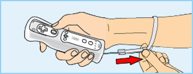

|
2
|
Usage Precautions
|
 |
Wear the wrist strap! Make sure that all players using the Wii Remote™ are wearing the Wii Remote wrist strap (RVL-018 or RVL-018A) and that it has been tightened using the strap lock. When sharing the Wii Remote between multiple players, please be sure each person using the Wii Remote takes the time to properly put on the wrist strap. Wearing the wrist strap will help prevent the Wii Remote from flying across the room if you accidentally let go of it during game play.  
Hold the Wii Remote firmly and do not let go! Even while wearing the wrist strap, make sure you don’t let go of the Wii Remote during game play and do not use excessive motion. For example, in Wii Sports™ bowling, the proper way to let go of the ball while bowling is to release the B Button on the Wii Remote – DO NOT LET GO OF THE Wii REMOTE ITSELF. If you are having so much fun that you start perspiring, take a moment to dry your hands. If you use excessive motion and let go of the Wii Remote, the wrist strap may break and you could lose control of the Wii Remote. This could injure people nearby or cause damage to other objects. Additional
Information on Using the Wii game play with the Wii Remote can involve rapid or vigorous motion. Please use the wrist strap to prevent losing your grip on the Wii Remote and causing damage to the Wii Remote and surrounding objects, or injury to other people.
Give yourself plenty of room! You will probably move around while using the Wii Remote, so be careful that all areas that you might move into are clear. Make sure that furniture, objects and people are out of the play area so you don’t accidentally bump into them while playing. Also, as indicated in the Wii Operations Manual, it is recommended to stay at least 1 metre (3 feet) from the television.
This information is available at
Many people don’t know what the difference between 50 Hz and 60 Hz is, but since most modern TV models support 60 Hz it’s definitely worth finding out if your TV is compatible. In basic terms, Hz (hertz) is related to the number of frames per second (fps) appearing on your screen. 50 Hz produces 25 fps and 60 Hz produces close to 30 fps, which may not sound like a big difference, but the increase in quality from 25 to around 30 fps is quite noticeable on-screen. With 60 Hz you get a smoother game screen with less flicker and the game running at optimal speed, all of which produces a great gaming experience. The default setting of the Wii console is 50 Hz (576i) Mode. To change this, activate 60 Hz (480i) Mode by selecting this TV TYPE in the Wii Settings. However, certain (mainly older) TV sets are unable to display games in 60 Hz (480i) Mode, and therefore a small number of players could experience difficulties using this display mode on their TVs. To find out if your TV set features 60 Hz (480i) Mode, consult your TV instruction manual or contact the manufacturer. If, after changing the setting to 60 Hz (480i) Mode, the screen appears blank or distorted, it will likely be the case that your TV does not support 60 Hz (480i) Mode. To revert to the default setting, press RESET on the Wii console while holding the down direction on the Control Pad, and the Wii system will restart in 50 Hz (576i) Mode. For additional information on how to set the TV TYPE, please refer to the Wii Operations Manual – Channels & Settings. Also, when you connect the Wii RGB cable (RVL-013) (sold separately) to a TV which has an RGB terminal and PAL60 compatibility, or you connect the Wii Component AV cable (RVL-011) (sold separately) to a TV which has component video inputs, you can enjoy an intensely sharp picture on-screen.
EDTV / HDTV (480p) is a progressive display mode that allows players to view and enjoy their game in the best possible quality. This means an intensely sharp picture, the game running at optimal speed with minimised flicker, all of which produces a great gaming experience. We at Nintendo® want players to enjoy our games under the best possible play conditions. However, it may be the case that this mode cannot be displayed, depending on the combination of TV and cable that you use. To find out if your TV supports the Progressive Scan display needed for the EDTV / HDTV (480p) Mode, consult your TV instruction manual or contact the respective manufacturer for details. Please make sure to use the Wii Component AV cable (RVL-011) (sold separately) and to enable Progressive Scan on your display device when selecting this mode. The default setting of the Wii is 50 Hz (576i) Mode. To activate EDTV / HDTV (480p) Mode, please select this TV TYPE in the Wii Settings. For additional information on how to set the TV TYPE, please refer to the Wii Operations Manual – Channels & Settings. |

 |
 |
 |